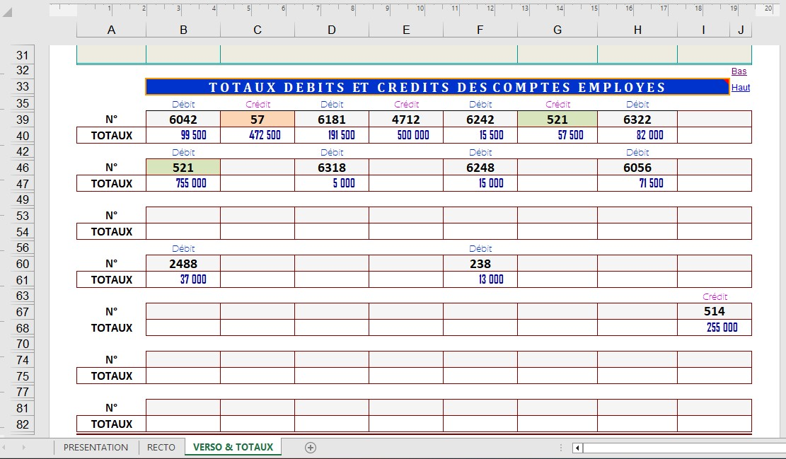

Affichage des totaux des comptes
Cette capture illustre l’affichage en temps réel des totaux des comptes d’exploitation. La zone, protégée contre toute modification, présente jusqu’à 56 totaux possibles.
Les totaux sont différenciés par couleurs : débit, crédit, caisse et banque.
Télécharger la version française IMPUMAT